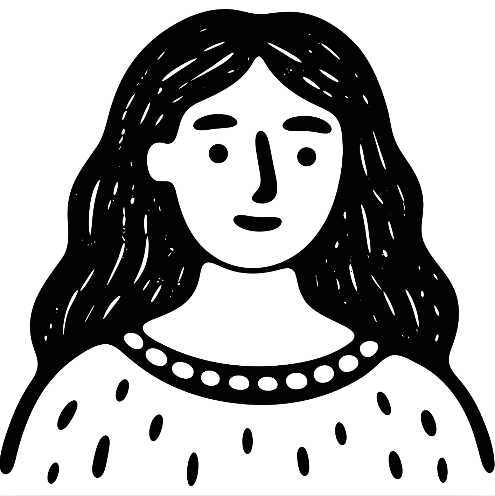
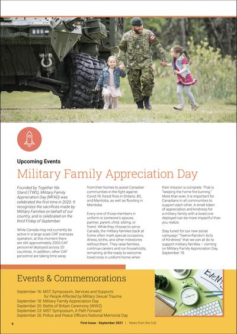
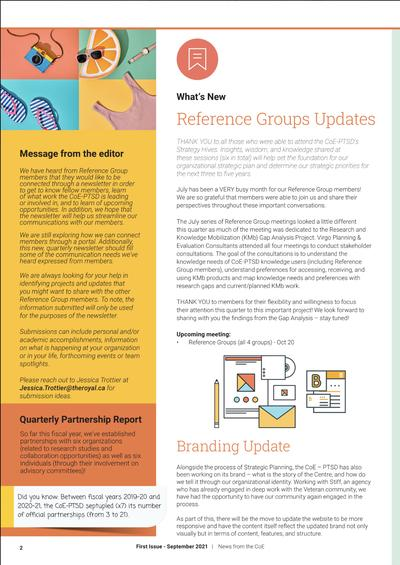
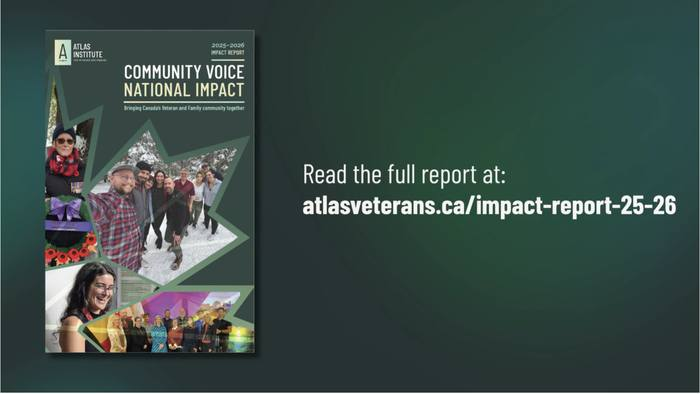
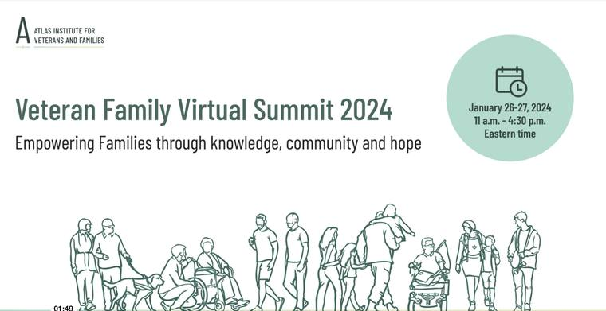
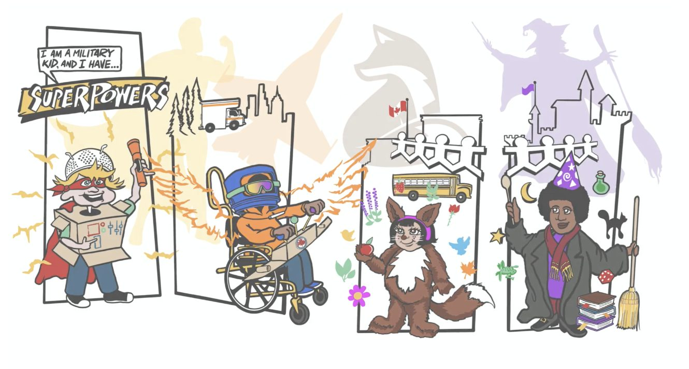

Linh Hoang
Content strategy and writing for complex, human-centred work
I turn complex public-interest work into clear campaigns, editorial programs, and stakeholder communications — produced for government-funded institutions and bilingual audiences across Canada and Southeast Asia.

Background
About this portfolio
This collection showcases English content produced at the Atlas Institute for Veterans and Families (Canada), where I led all digital communications from 2021 to 2024 — web copy, campaigns, editorial newsletters, social media, and stakeholder reporting. The work was produced for a national audience on emotionally complex public health topics, requiring the same audience intelligence and tonal precision that drives engagement in any high-stakes content context.
Career highlights
Following my B.A. in Communications at RMIT Vietnam, I joined Indochine Media Ventures, writing bilingual content across Robb Report Vietnam and Barcode Vietnam. I then moved to Canada to complete a journalism diploma at SAIT, which led to a Communications Coordinator role at CMHA Calgary and then a marketing position at Anderson Vacations. I spent the following three years as Social & Digital Engagement Lead at the Atlas Institute — a national research and knowledge mobilization centre funded by Veterans Affairs Canada — and currently support them as a full-time communications contractor.
Projects
Eight selected samples across campaign, editorial, social, video, reporting, and strategy — produced for a national public-health research institution. The first three samples include live links to the published work; all samples include production context and editorial decisions.
Changemakers — Three-issue editorial run


↑ Changemakers newsletter spreads — Issue 1, September 2021 (Atlas Institute)
As editorial lead, I conceived the calendar, sourced and coordinated content from researchers and program teams, wrote and edited all submissions for voice consistency, and managed production from first draft through bilingual publication.

Atlas Institute Impact Report 2025–26 — Video
Produced the video content for the Atlas Institute's 2025–26 Impact Report as part of ongoing contractor work. The piece distills a year of organizational milestones — research findings, program outcomes, and community impact — into a format accessible to a national Veteran and stakeholder audience.
View Impact Report 2025–26 ↗ (opens in a new tab)Brand governance & content strategy
At the Atlas Institute I developed and owned the social media policy from scratch — covering employee conduct, visitor interaction rules, copyright compliance, and a structured PR crisis response matrix. Governance responsibilities also included applying and contributing to the Style Guide (v3, June 2023), producing the Digital Strategy Report (April–June 2023), and briefing, directing, and evaluating external agency deliverables.
Skills
| Category | Skills & tools |
|---|---|
| Writing & Editing | Web copy · Email campaigns · Video scripts · Executive speeches · Press releases · Newsletter editorial · Social media copy (all platforms) · Research communications · Resource hub content · Policy writing |
| Campaign & Strategy | Campaign concepting · Content calendar development · A/B testing (headlines, hooks, visuals) · Channel-native adaptation · Agency briefing & evaluation · Analytics reporting · Digital strategy |
| Languages | English (native-level; journalism-trained) · Vietnamese (native) |
| Tools & Platforms | Adobe Creative Cloud · Canva · Meta Business Suite · Notion · Sprout Social · WordPress / CMS · Social analytics dashboards |
More work

Veteran Family Virtual Summit 2023 + 2024
Across two consecutive years, I served as Communications Lead for Content at the Atlas Institute's national virtual summit for Veteran families. The role spanned the full content pipeline — I planned and wrote social media campaigns before and after each event, produced web and email copy, scripted and coordinated editorial video, and developed ad creative that ran across paid channels. View the 2024 summit ↗ (opens in a new tab)
"Veteran Families have unique experiences and needs that are often unheard and unaddressed. To start a discussion about these needs, the Atlas Institute hosted the Veteran Family Summit… The high level of interest and positive feedback from our audience underscores the need for more information and discussion about the mental health and well-being of Veteran Families."
Month of the Military Child 2023 — campaign

↑ Campaign hero, atlasveterans.ca
Led all English content for the Atlas Institute's Month of the Military Child 2023 campaign — writing the web copy, social posts, email copy, and video script from a single brief. The campaign's central metaphor, the dandelion, threaded through every format.
View Month of the Military Child campaign ↗ (opens in a new tab)RCMP 150th Anniversary — Dedicated campaign page
"We are excited to announce the launch of a video campaign honouring the RCMP's 150 years of dedicated service to keeping our country safe. To foster community empathy and raise awareness about the diverse experiences of RCMP Veterans and their Families, this series features short documentary profiles of current and former RCMP members sharing what it means to serve."
Wrote a multi-section web hub for the RCMP's 150th anniversary alongside a documentary video series launch — structuring complex institutional content as approachable web copy with clear navigation and multiple calls-to-action.
View RCMP 150th Anniversary page ↗ (opens in a new tab)Lived expertise lead for Veterans — Multi-platform social posts
A recruitment announcement adapted across LinkedIn, Facebook, and Twitter/X — each version written for its platform's audience expectations: credential-focused on LinkedIn, community-framed on Facebook, action-oriented and concise on Twitter/X.
Writing for press and stakeholder audiences
When Ukraine's First Lady, Olena Zelenska, visited the Atlas Institute to discuss international best practices in military mental health, I drafted the press release that announced the visit and the resulting memorandum of understanding. The release translated a high-stakes bilateral moment — attended by the Minister of Veterans Affairs — into clear language for both media and public audiences. Read the full release ↗ (opens in a new tab)
"Together, we are looking to explore opportunities to collaborate that will allow Lisova Polyana to support Veteran and Family mental health in Ukraine, informed by the work Atlas is doing."
Get in touch
Interested in working together on English content, campaign writing, or communications strategy? Reach out via email.